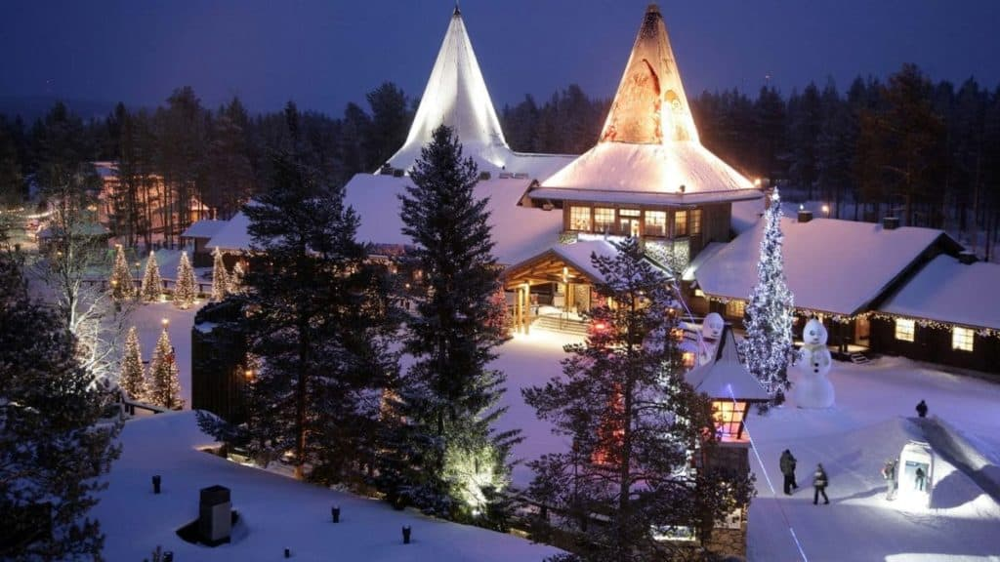
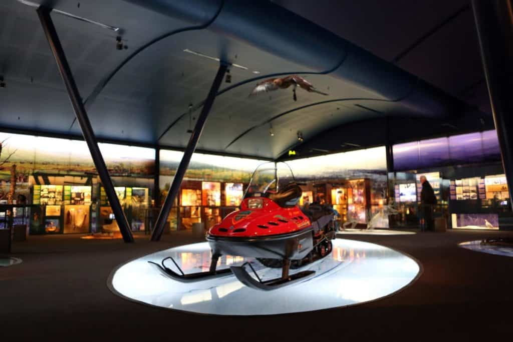

25 Best Things To Do In Finland
January 26, 2020
Written by Jan Meeuwesen
Our travel recommendations are based on our personal experiences and research, written by locals and travel experts with deep familiarity with the destination. When you book a hotel or tour that we link to, we may earn a commission.
When people think of Finland they imagine majestic forests and stunning natural landscapes all of which you will find here, but if you prefer a little urban sprawl then you can still spend time in charming big cities like Helsinki and Turku.
One of the main reasons that people travel to Finland is take in all its wintery delights, be it visiting Father Christmas at SantaPark or riding with reindeer in Lapland.
If you like skiing then you will love the range of ski resorts dotted around the country, and in the summer months you can enjoy warmer weather that is perfect for hiking and biking.
Of course, the most famous of all Finland’s attractions are the mighty Northern Lights, which most people consider the highlight of a trip to this part of the world.
Lets explore the best things to do in Finland:
1. Meet Mr. and Mrs. Claus at SantaPark
If you don’t want to go all the way to the North Pole then why not visit Rovaniemi in the north of Finland? Here you will find Christmas delights such as an Elf School and you can even meet Santa and Mrs. Claus who will teach you how to make gingerbread treats.
There is a Calligraphy School where you can pen a letter to Santa and a Post Office where the elves will show you all the mail they receive over the course of the year.
The main highlight here is to cross the Arctic Circle via an underground tunnel.
If you are travelling with children then make sure not to miss this Winter Wonderland experience in Finland.
2. Learn some history at Siida Museum
Located on gorgeous Lake Inari in Inari is the Siida Museum which is said to be one of the best museums in Finland.
The museum is dedicated to telling the story of the Sami, or the Laplanders of Finland who were a semi-nomadic tribe.
At Siida Museum you will find nature exhibits as well as photographic galleries and interactive information sections.
The galleries chart the history of the Sami from ancient times until the modern day and you will also find engaging rotating galleries and a theater that has shows about the aurora, also known as the Northern Lights.